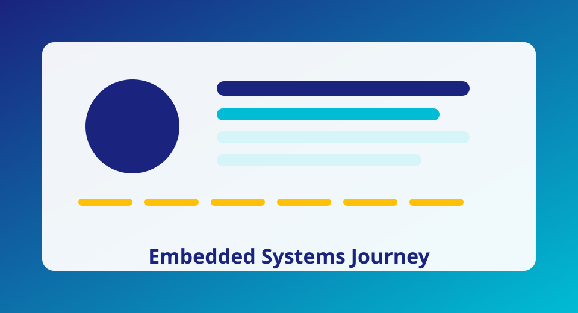

I'm an Electronics Engineering student specializing in Computer Systems, focused on translating theory into deployable embedded products with measurable reliability.
My training combines analog and digital electronics, microcontroller architecture, and computer systems design. I enjoy building firmware that bridges hardware constraints and software clarity.
I use Keil uVision, J-Link debugger, ARM Cortex-M33 workflows, logic analyzers, oscilloscopes, and versioned firmware practices. My stack emphasizes repeatable tests, robust memory use, and traceable interfaces.